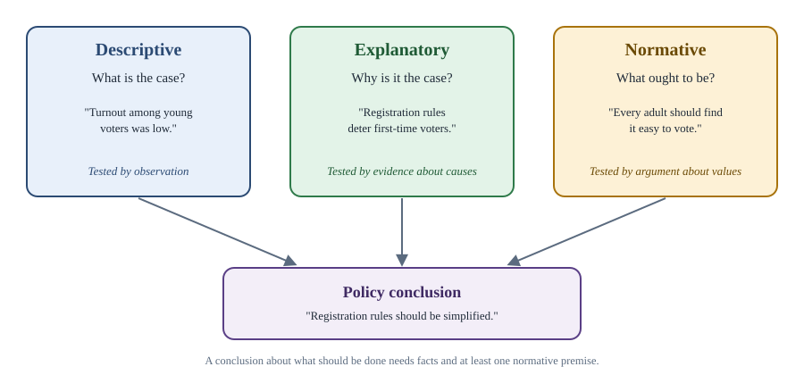
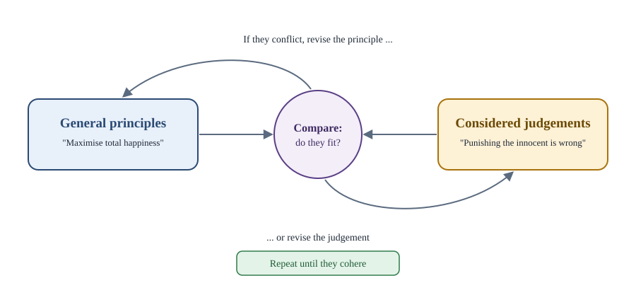

Chapter 1: What Is Political Theory?¶
Politics, the questions it raises, and the ways of answering them
Learning outcomes
When you have finished this chapter you should be able to:
- give and compare several definitions of politics;
- explain what political theory studies and how it differs from empirical political science;
- distinguish descriptive, explanatory and normative claims, and recognise each in an argument;
- describe the main methods of political theory: conceptual analysis, normative argument, historical interpretation and reflective equilibrium;
- outline the history of the subject from ancient Greece and India to its modern revival;
- explain why political theory matters for citizens and not only for scholars.
1.1 What is politics?¶
Imagine a village that must decide how to share water from a single well during a dry summer. Some families have large fields, some small ones; some have been in the village for generations, some arrived last year. One family says the water should be shared equally per household; another says per person; a third says it should go first to those whose crops will die without it; a fourth says the families who dug the well should decide. Someone suggests a vote. Someone else asks who may vote, and whether a majority may take the water of a minority.
Nothing in this story involves a government building, a party or an election campaign, yet it is plainly political. It contains the elements that make an activity political:
- a shared problem that affects many people and cannot be left wholly to each one;
- disagreement about what should be done, rooted partly in interests and partly in different ideas of what is fair;
- a need for a decision that will bind everyone, including those who disagreed;
- questions of power and authority: who decides, by what right, and what happens to those who refuse to comply.
Political scientists have offered several definitions of politics, each catching part of this picture.
| Definition | Associated with | What it emphasises |
|---|---|---|
| Politics as the art of government | The traditional view, going back to the Greek word polis (city-state) | The activities of the state and those who run it |
| Politics as public affairs | Aristotle; later liberal thinkers | The public sphere of common concerns, as opposed to private life |
| Politics as the authoritative allocation of values for a society | David Easton, The Political System (1953) | Binding decisions about who gets what goods, rights and burdens |
| Politics as who gets what, when, how | Harold Lasswell, Politics: Who Gets What, When, How (1936) | Competition for scarce resources and influence |
| Politics as compromise and consensus | Bernard Crick, In Defence of Politics (1962) | Peaceful resolution of conflict by discussion rather than force |
| Politics as power | Many writers, including Marxists and feminists | Power relations wherever they occur, including the family and the workplace |
Table 1.1. Six definitions of politics.
The definitions differ mainly in how wide they draw the boundary. The narrowest confines politics to the state. The widest finds politics wherever power is exercised, which led the feminist movement of the 1960s and 1970s to the slogan "the personal is political": relations within the household, it argued, are shaped by power and can be just or unjust (Chapter 12). Neither boundary is simply correct. Where you draw it is itself a theoretical choice with consequences, because what counts as "political" is what we think may properly be debated and changed by collective action.
Key idea
Politics arises wherever people who disagree must reach decisions that bind them all. It always involves both interests (what people want) and values (what they think is right), and it always raises the question of who has the power and the right to decide.
1.2 What is political theory?¶
Political theory is the systematic study of the ideas, values and arguments that underlie political life. It asks three kinds of question.
- What do our political concepts mean? What is liberty? Is power the same as authority? What makes a group of people a nation?
- How should political life be organised? Should the state redistribute wealth? Is democracy the best form of government, and if so, which kind? When, if ever, is it right to break the law?
- How have thinkers answered these questions, and why? What did Plato, Kautilya, Hobbes, Locke, Rousseau, Marx, Gandhi or Ambedkar argue, and what problems were they trying to solve?
Political theory is closely related to political philosophy. Some writers use the two terms interchangeably. Others use "political philosophy" for the most abstract and normative work (what justice is, whether the state is legitimate), and "political theory" for a broader field that also includes the history of political ideas, the analysis of ideologies and theories that explain political behaviour. This book uses "political theory" in the broad sense.
It is also related to, and different from, political science in the empirical sense: the study of how political institutions and actors actually behave, using observation, comparison, surveys and statistics. An empirical political scientist might ask why turnout at elections is lower among young voters. A political theorist might ask whether voting should be compulsory, or whether a democracy whose young citizens rarely vote is fully legitimate. The two need each other. Normative arguments that ignore facts are idle, and empirical research always rests on concepts (such as "democracy" or "power") whose meaning has to be worked out.
1.3 Three kinds of claim¶
The single most useful skill in political theory is the ability to tell what kind of claim is being made. There are three main kinds.
- A descriptive claim says how things are: "Women won the right to vote in national elections in New Zealand in 1893." It is true or false as a matter of fact.
- An explanatory claim says why things are as they are: "Countries with higher average incomes are more likely to remain democracies." It is tested by evidence and by reasoning about causes.
- A normative claim says how things ought to be: "Every adult should have an equal vote." It cannot be settled by facts alone; it needs an argument about values.
Many real arguments mix the three. Consider: "Rent control reduces the supply of housing, so it should be abolished." This contains an explanatory claim (rent control reduces supply) and a normative conclusion (it should be abolished). The conclusion follows only with a hidden normative premise, for example that the goal of housing policy should be to maximise supply, or that the benefits to existing tenants are outweighed by the harm to future ones. Bringing such hidden premises into the open is a basic task of political theory.

Caution: you cannot get an ought from an is alone
The Scottish philosopher David Hume observed in A Treatise of Human Nature (1739–40) that writers often slide from statements about what is to statements about what ought to be, without explaining how. Facts matter to every political argument, but a conclusion about what should be done always needs at least one premise about what is valuable or right. When an argument seems to move straight from facts to a recommendation, look for the missing value premise.
Worked example 1.1: Taking an argument apart
Argument. "Most citizens in this country follow one religion. Therefore the state should give that religion a special official status."
Analysis. The first sentence is descriptive. The conclusion is normative. To connect them we need a value premise such as "the state should reflect the religion of the majority". Once stated, the premise can be examined. Is it consistent with equal citizenship for members of other religions or of none? Would its defenders accept it if they were in the minority? Chapter 10 discusses the arguments on each side. The point here is that the original argument was incomplete; the real debate is about the hidden premise.
1.4 The methods of political theory¶
Political theory has no laboratory, but it does have methods. Four are especially important.
Conceptual analysis¶
Conceptual analysis asks what a concept means and how it is related to others. It often proceeds by drawing distinctions. Is "freedom" the absence of interference, or the ability to act, or not being under another's arbitrary power (Chapter 4)? Is "equality" about treating people the same or about giving them what they need (Chapter 5)? Some concepts are essentially contested, a term introduced by the philosopher W. B. Gallie in 1956: they are evaluative, complex, and open to rival interpretations, and disputes about their proper use cannot be ended by definition alone. "Democracy", "justice" and "freedom" are standard examples. Recognising that a concept is contested does not mean that all interpretations are equally good. It means that choosing between them requires argument rather than a dictionary.
Normative argument¶
Normative argument starts from premises about values and reasons towards conclusions about what should be done. It uses the ordinary tools of logic: an argument is valid if the conclusion follows from the premises, and sound if it is valid and the premises are true. Political theorists often test principles by thought experiments, imagined situations designed to isolate one feature of a problem. The state of nature in Hobbes and Locke (Chapter 2) and the veil of ignorance in Rawls (Chapter 6) are famous examples.
Historical and contextual interpretation¶
Much political theory consists of reading the great texts of the past. One approach treats them as contributions to a timeless conversation about perennial questions. Another, associated with historians of ideas such as Quentin Skinner and J. G. A. Pocock (the "Cambridge school"), insists that a text must be read in its context: to understand what Machiavelli or Locke meant, we must ask what they were doing in writing, which debates they were entering and which opponents they were answering. The two approaches can be combined: knowing the context guards against reading our own concerns into old texts, while the questions the texts raise often remain alive.
Reflective equilibrium¶
How do we test a moral principle? John Rawls described a method he called reflective equilibrium. We start with our considered judgements about particular cases (slavery is wrong; a fair trial is owed to everyone) and with general principles that seem plausible. Where they conflict, we adjust one or the other, sometimes giving up a principle that yields an unacceptable verdict, sometimes revising a judgement in the light of a principle we find compelling, until principles and judgements fit together. The method is widely used, even by theorists who reject Rawls's conclusions.

Worked example 1.2: Reflective equilibrium in action
Principle. "The government should always do whatever produces the greatest total happiness."
Test case. A town could prevent a riot that would kill several people by framing and punishing one innocent person. The principle seems to require it.
Adjustment. Most people judge firmly that punishing the innocent is wrong. We might give up the principle, or add a constraint to it (for example, that certain rights of individuals may not be violated even to increase total happiness), or argue that the principle, properly applied, would not recommend framing the innocent because of the long-run damage to trust in the courts. Each option is a move towards equilibrium. This is exactly the debate between utilitarianism and its critics in Chapter 6.
1.5 A short history of political thought¶
Systematic thinking about politics is very old and appears in many civilisations. A brief map helps to place the thinkers who appear later in the book.
Ancient Greece¶
The word "politics" comes from the Greek polis, the self-governing city-state. In the fifth and fourth centuries BCE, Athens was a direct democracy in which adult male citizens met in an assembly to decide on laws, war and peace (women, slaves and resident foreigners were excluded). Plato (c. 427–347 BCE), in the Republic, asked what justice is and argued that the ideal city would be ruled by philosophers who understood the good. He was deeply critical of democracy, which had condemned his teacher Socrates to death in 399 BCE. Aristotle (384–322 BCE), in the Politics, described the human being as by nature a political animal, one who can live fully only in a political community. He classified constitutions by who rules (one, few or many) and whether they rule for the common good or for themselves, and he favoured a mixed constitution.
Ancient India¶
Indian thought about kingship, law and statecraft is equally ancient. The texts of dharmaśāstra set out the duties (rājadharma) of rulers. The Arthaśāstra attributed to Kauṭilya is a detailed treatise on governing a kingdom: its administration, revenue, law, diplomacy and war. Buddhist texts contain stories of a ruler chosen by the people to keep order. Chapter 13 discusses Kauṭilya at length. Political thought in China (Confucius, Mencius and the Legalists) and in the Islamic world (al-Fārābī, Ibn Khaldūn) also developed rich traditions which this book mentions only in passing.
Medieval and early modern Europe¶
In medieval Europe political thought was framed by Christianity: thinkers such as Augustine and Thomas Aquinas asked how earthly government related to divine law. The early modern period brought a decisive change. Niccolò Machiavelli (1469–1527), in The Prince (written in 1513), analysed how rulers actually gain and keep power, separating political skill from conventional morality. The religious wars of the sixteenth and seventeenth centuries prompted new theories of sovereignty and of the state. Thomas Hobbes (Leviathan, 1651), John Locke (Two Treatises of Government, 1689) and Jean-Jacques Rousseau (The Social Contract, 1762) developed versions of the social contract: the idea that political authority is justified by the agreement, actual or hypothetical, of those subject to it (Chapter 2).
The modern age¶
The American and French Revolutions of the late eighteenth century turned ideas of rights and popular sovereignty into constitutions. The nineteenth century produced the great ideologies: liberalism (J. S. Mill), conservatism (whose founding text is Edmund Burke's Reflections on the Revolution in France, 1790), socialism and Karl Marx's critique of capitalism (Chapter 11). The twentieth century saw the struggle between democracy and the totalitarian regimes of fascism and Soviet communism, the end of the European empires and the rise of anti-colonial thought, of which Gandhi, Ambedkar, Nehru and Tagore are major Indian examples (Chapter 13), and the spread of feminist and environmental thought (Chapter 12).
1.6 Decline and revival¶
In the middle of the twentieth century some scholars believed that political theory was dying. Two pressures seemed to threaten it. The philosophical movement of logical positivism held that only statements that can be verified by observation, or are true by definition, are meaningful; moral and political claims, on this view, merely express feelings. At the same time the behavioural revolution in political science, especially in the United States in the 1950s and 1960s, emphasised measurable behaviour (voting, opinion, group activity) and treated normative questions as unscientific. In 1956 the historian Peter Laslett wrote that, for the moment at least, political philosophy was dead.
The obituary was premature. Isaiah Berlin answered in an essay of 1962 that political theory would survive as long as people disagreed about the ends of life, which is to say as long as there was politics. The civil rights movement, the Vietnam War and decolonisation raised urgent questions about civil disobedience, just war and self-determination. Then in 1971 John Rawls published A Theory of Justice, a large and rigorous argument about the principles of a just society. It provoked replies from libertarians such as Robert Nozick (Anarchy, State, and Utopia, 1974), from communitarians, feminists and Marxists, and from Amartya Sen, whose capability approach (Chapter 6) reshaped thinking about equality and development. Political theory today is a lively and varied field, connected to economics, law, history and philosophy.
Is political theory Western?
Textbooks have often presented political theory as a conversation among European thinkers from Plato onwards. This is too narrow. Thinkers in India, China, the Islamic world, Africa and the Americas have asked the same basic questions about rule, justice and community, and modern anti-colonial and feminist writers have shown how the European canon was shaped by the experience of the societies that produced it. The growing field of comparative political theory studies these traditions side by side. This book draws on Indian thought throughout and devotes Chapter 13 to it.
1.7 Why political theory matters¶
Political theory might seem remote from real politics. In fact, it is everywhere in it.
- Every policy rests on values. A tax system embodies a view about fairness; a law on speech embodies a view about liberty and harm; an immigration policy embodies a view about membership. Political theory makes these views explicit so that they can be examined.
- Political language is theory in disguise. Words such as "rights", "the people", "secular" and "equal opportunity" carry theories with them. Citizens who understand the theories are harder to manipulate with slogans.
- Constitutions are applied political theory. The framers of the Constitution of India argued about sovereignty, rights, federalism, secularism and social justice. Reading those debates without political theory is like reading a mathematical proof without knowing what the symbols mean.
- It teaches a way of thinking. Political theory trains the habits of defining terms, looking for reasons, considering objections and treating opponents fairly. These habits are valuable in any profession and indispensable in a democracy.
Summary
- Politics arises wherever people who disagree must make binding collective decisions; definitions differ in how widely they draw its boundary, from the state alone to all relations of power.
- Political theory studies the concepts, values and arguments of political life: what concepts mean, how political life should be organised, and how past thinkers answered these questions.
- Descriptive claims say what is, explanatory claims say why, normative claims say what ought to be. A normative conclusion always needs at least one normative premise.
- The main methods are conceptual analysis (including the recognition of essentially contested concepts), normative argument and thought experiments, historical and contextual interpretation, and reflective equilibrium.
- Political thought has a long history in Greece, India, China, the Islamic world and Europe; the social contract theorists, the nineteenth-century ideologies and anti-colonial thought are milestones.
- After a mid-century decline under positivism and behaviouralism, political theory revived, especially after Rawls's A Theory of Justice (1971).
1.8 Exercises¶
Exercise 1
Classify each claim as descriptive, explanatory or normative. (a) "The Constitution of India came into force on 26 January 1950." (b) "Proportional representation tends to produce more political parties than first-past-the-post." (c) "Voting at sixteen would make democracy more representative and should be introduced."
Answer
(a) Descriptive. (b) Explanatory: it makes a general claim about cause and effect, to be tested by evidence. (c) Mixed: it contains an explanatory or predictive claim (it would make democracy more representative) and a normative conclusion (it should be introduced), which also depends on the value premise that a more representative democracy is better.
Exercise 2
Explain the difference between Easton's and Crick's definitions of politics. Which activities would count as political under one but not the other?
Answer
Easton defines politics as the authoritative allocation of values for a society: any binding decision about who gets what, whoever makes it and however it is made. Crick defines politics more narrowly as the peaceful reconciliation of different interests by discussion and compromise. A dictator who allocates land by decree, with no discussion, engages in politics on Easton's definition but not on Crick's; for Crick, rule by pure force is the opposite of politics.
Exercise 3
What does it mean to call a concept "essentially contested"? Give an example and explain why the dispute about it cannot be settled by a dictionary.
Answer
An essentially contested concept (W. B. Gallie, 1956) is one that is evaluative, complex and open to rival interpretations, so that disputes about its proper use are part of using it. "Democracy" is an example: some take it to mean free elections and majority rule, others insist it also requires protected rights, social equality or active participation. A dictionary can record the uses but cannot decide which is best, because each interpretation reflects a different view of what is valuable about democracy. Choosing among them requires argument.
Exercise 4
Find the hidden normative premise: "Most economists agree that free trade increases total national income. So the government should remove all tariffs."
Answer
The argument needs a premise such as "the government should adopt whatever policy maximises total national income". This premise ignores how the gains and losses are distributed: free trade may raise total income while some workers lose their jobs. Once the premise is stated, one can ask whether total income is the only thing that matters, or whether fairness to those who lose should also count.
Exercise 5
Describe the method of reflective equilibrium in your own words, and apply it to the principle "a majority may always decide any question".
Answer
Reflective equilibrium means testing general principles against considered judgements about cases, and revising either until they cohere. Test case: a majority votes to deprive a religious minority of the right to worship. Most people judge firmly that this is wrong. We can either keep the principle and accept the conclusion (few will), or revise the principle, for instance to "a majority may decide questions that do not violate the basic rights of others", which matches our judgement. This leads to the idea of constitutional limits on majority rule discussed in Chapter 8.
Exercise 6
Why did some scholars in the 1950s believe that political theory was dead, and what led to its revival?
Answer
Logical positivism treated value statements as meaningless expressions of feeling, and the behavioural revolution in political science favoured measurable behaviour over normative questions. The revival came from urgent public controversies (civil rights, civil disobedience, war, decolonisation), from defences of normative inquiry such as Isaiah Berlin's essay of 1962, and above all from Rawls's A Theory of Justice (1971) and the debates it provoked.
1.9 Quiz¶
Check yourself: what political theory is
Exercise 1
Who defined politics as "the authoritative allocation of values for a society"?
- Harold Lasswell
- David Easton
- Bernard Crick
- Aristotle
Answer
David Easton
Exercise 2
Which kind of claim is: 'Every adult citizen should have one equal vote'?
- Descriptive
- Explanatory
- Normative
- Historical
Answer
Normative
Exercise 3
Which philosopher introduced the term "essentially contested concepts" in 1956? (surname)
Answer
Gallie / W. B. Gallie
Exercise 4
Which method tests principles against considered judgements about cases and revises each until they fit?
- Logical positivism
- Reflective equilibrium
- Behaviouralism
- Contextualism
Answer
Reflective equilibrium
Exercise 5
Match each thinker with a work.
| A | B |
|---|---|
| Hobbes | The Social Contract |
| Locke | The Prince |
| Rousseau | Leviathan |
| Machiavelli | Two Treatises of Government |
Answer
Hobbes — Leviathan; Locke — Two Treatises of Government; Rousseau — The Social Contract; Machiavelli — The Prince
Exercise 6
Which book of 1971 is usually credited with reviving normative political philosophy?
- Anarchy, State, and Utopia
- A Theory of Justice
- In Defence of Politics
- The Political System
Answer
A Theory of Justice
Exercise 7
The slogan "the personal is political" is associated with which movement?
- Behaviouralism
- Logical positivism
- Feminism
- Conservatism
Answer
Feminism